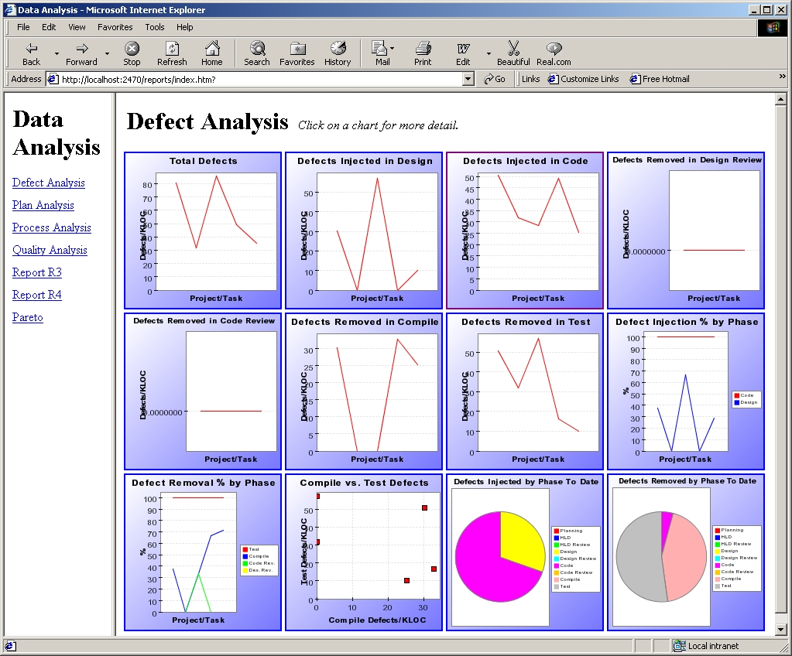

The PSP provides Postmortem scripts for all of the PSP levels. To get to the postmortem for the current program, we can click the link at the bottom of the development script. Also, clicking the script button on the dashboard while in the postmortem phase will bring up the postmortem script.
After making sure that the entry criteria are met, the next step that must be done is to enter the actual size data for the program. These numbers get entered as actual data on the Size Estimating Template form, which can be reached by clicking the appropriate link from the postmortem script.
Once the actual size information (including measures of reuse) have been entered on the Size Estimating Template form, all the data pertinent to the project will appear on the Project Plan Summary form, which can also be reached by clicking the appropriate link from the postmortem script.
The Process Dashboard also offers several other aids for analyzing postmortem data. Choosing Data Analysis from the "C" menu will open the web browser to a set of pages that contain many useful graphs of process data.
For more information on the types of data that can be analyzed via these reports and graphs, see the Creating Reports and Charts help topic.
That's it for this example. We hope it has been helpful.
Jump to step:
START
1. Creating the project
2. Planning the project
3. Designing the program
4. Writing the code
5. Compiling the program
6. Testing the program
7. Postmortem